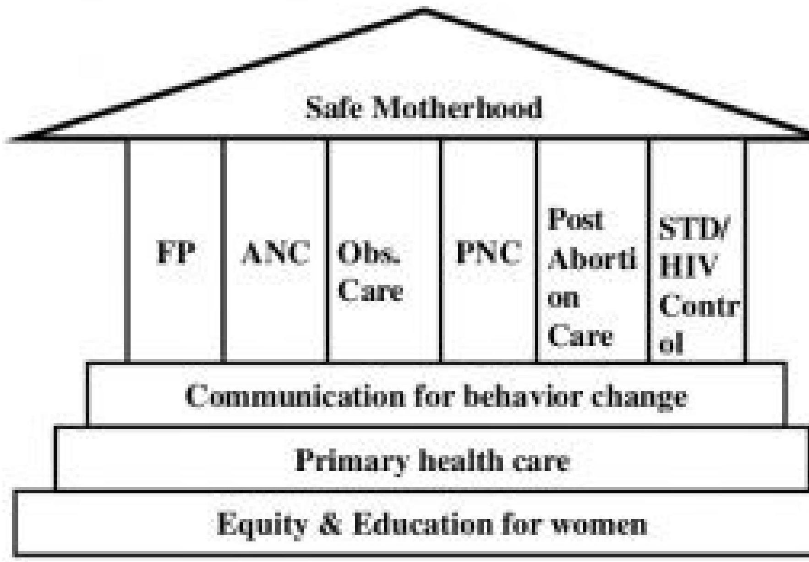

Safe Motherhood & Family Planning Counselling
Pillars of Safe Motherhood
What do we understand by Safe motherhood?
- Safe motherhood is the concept or initiatives to ensure that women receive high quality care in order to achieve the optimum level of health of mother and infant.
- Safe motherhood is designed in a way that the women is ensured of high-quality gynecological, family planning, prenatal, delivery and postpartum care.
- Safe motherhood aims at improving maternal and child health and eliminating the probable risk that can occur.
- The goal of the Safe Motherhood Program is to reduce maternal and neonatal morbidity and mortality and to improve the maternal and neonatal health through preventive and promotive activities.
"SIX PILLARS" OF SAFE MOTHERHOOD
- Family Planning: It is necessary to ensure that individuals and couples have adequate information and services regarding FP to plan the timing, number of children, and spacing between pregnancies.
- Antenatal Care (ANC): ANC checkups are necessary to detect complications early and treat them as soon as possible. It is also essential to provide pregnant women with vitamin supplements, iron tablets and vaccinations.
- Obstetric and Newborn Care: Refers to all the care and health care level initiatives provided to the mother and newborn. Birth attendants should have the knowledge, skills, and equipment to perform a clean and safe delivery.
- Postnatal Care (PNC): It is necessary to ensure that postpartum care is provided to the mother and baby, including counselling on child handling, exclusive breast feeding, and awareness regarding FP.
- Post abortion Care: It is necessary to prevent complications of abortion. Essential elements include emergency treatment, family planning counseling, and links to other reproductive health care.
- STD/HIV/AIDS Control: HIV screening is done to prevent, and manage HIV and AIDS transmission to the baby, including voluntary counseling and testing.
Major factors contributing to morbidity and mortality
Direct causes for the majority of maternal deaths are:
- Severe bleeding: Mostly bleeding after childbirth.
- Infections: Usually after childbirth, often due to unhygienic delivery practices.
- High blood pressure during pregnancy: Includes pre-eclampsia and eclampsia.
- Complications from delivery.
- Unsafe abortions.
The 3 Delays
Three delays usually refer to:
- Delay in the decision to seek care (seeking care)
- Delay arrival at a health facility (reaching care) and
- Delay in obtaining the adequate treatment (receiving care)
These delays contribute to increase the complication in pregnancy and are determined by factors like educational status, financial status, and accessibility of health care.
Counselling for Family Planning
The primary objective of counselling in the context of family planning is to help people decide on the number of children they wish to have, and when to have them. You can help them to choose a contraceptive method that is personally and medically appropriate.
Concepts of counselling
Family planning counselling is defined as a continuous process that you as the counsellor provide to help clients and people in your village make and arrive at informed choices about the size of their family.
Informed choice is defined as a voluntary choice or decision, based on the knowledge of all available information relevant to the choice or decision.
Types of Counselling
- Individual counselling: Most individuals prefer privacy and confidentiality during communication.
- Couple counselling: When you give a counselling service to a couple or partners together, particularly for irreversible methods.
- Group information sharing: Used when individual counselling is not possible or if people are more comfortable in a group.
Overview of the stages of counselling for family planning
- General counselling: Address the client's needs and concerns, give general information about methods, and clear up any mistaken beliefs.
- Method-specific counselling: Give more information about the chosen method. The acronym BRAIDED can help:
- Return/follow-up counselling: Discuss and manage any problems and side effects related to the given contraceptive method.
Steps in family planning counselling: The GATHER approach
GATHER is an acronym that will help you remember the 6 basic steps for family planning counselling:
- G - Greet the client respectfully. Give your full attention, ensure privacy, and explain what will happen during the visit.
- A - Ask them about their family planning needs, doubts, and concerns. Collect relevant history to provide appropriate information.
- T - Tell them about different contraceptive options and methods available. Describe how each works, its advantages, disadvantages, and possible side-effects.
- H - Help them to make decisions about choices of methods. Ask about their plans, what their partner prefers, and repeat information when necessary.
- E - Explain and demonstrate how to use the chosen method. Give supplies, explain side-effects and warning signs, and ask the client to repeat key instructions.
- R - Return/refer; schedule and carry out a return visit and follow up. At the follow-up, ask about any problems or side effects and provide support.
Respecting the rights of the client
Every client has the right to:
- Information: To learn about their options.
- Access: To obtain services regardless of status.
- Choice: To decide freely on contraception.
- Safety: To practice safe, effective contraception.
- Privacy: To have a private environment.
- Confidentiality: To be assured personal information remains confidential.
- Dignity: To be treated with courtesy.
- Comfort: To feel comfortable when receiving services.
- Continuity: To receive follow-up care.
- Opinion: To express views on the services offered.